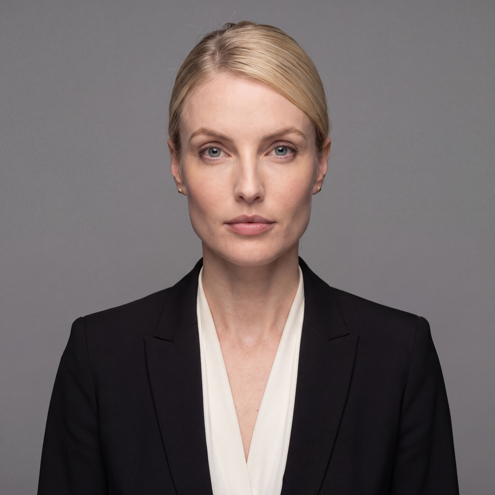
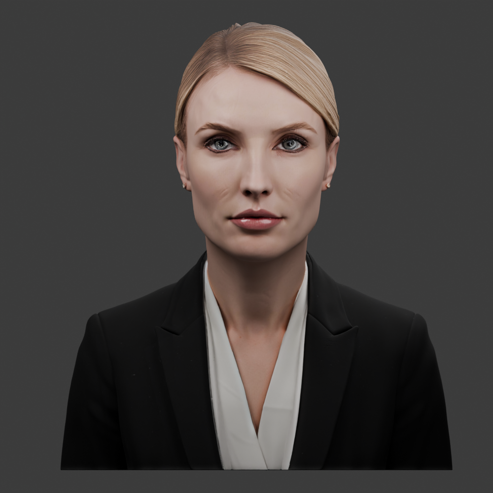
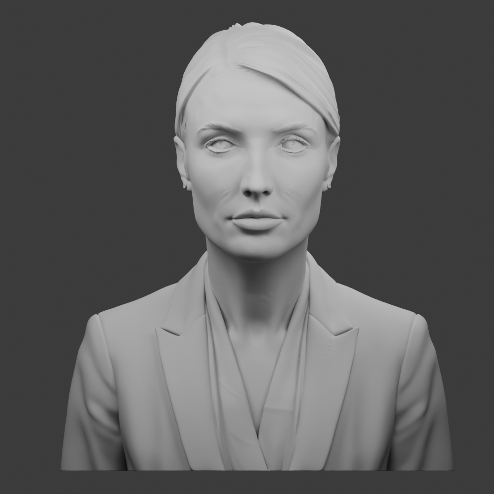
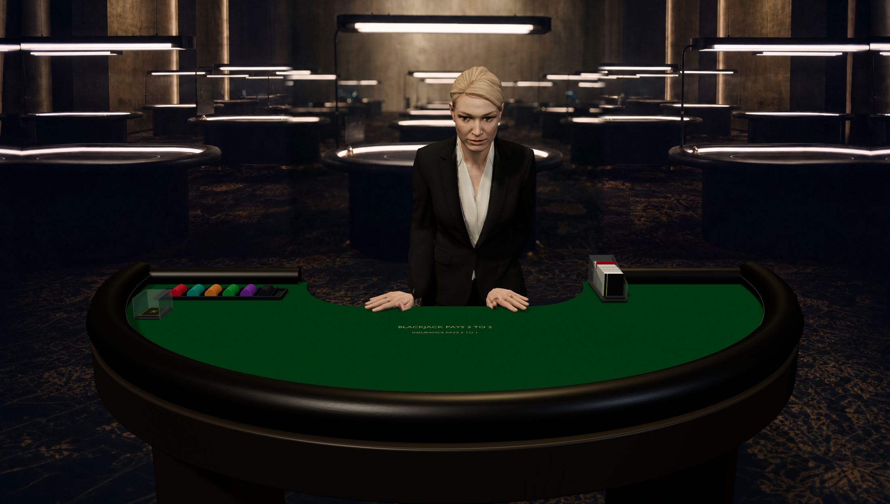
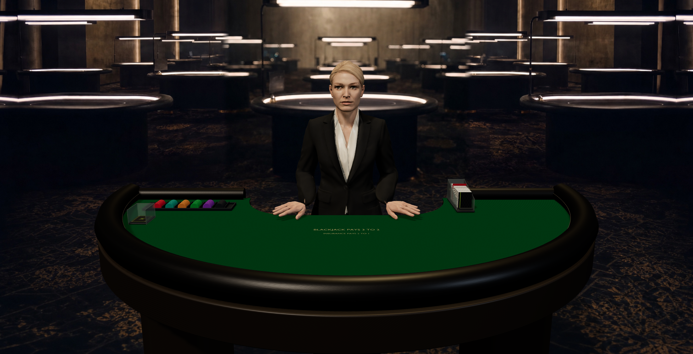

Astrid: what the source contains, and what the game changes
The newer face source is closer to the reference. The old game model has a separate posture problem. Both need to be distinguished from a finished realistic dealer.

Reconstruction inputHiggsfield reference image. This is the target for the face, not an animated mesh.

Actual new 3D sourceOriginal GLB, original PBR, no rig or deformation. Eye rims, cheek marks and solid hair remain.

Geometry without texturesThe defects remain in the mesh. Lighting or a texture swap alone cannot remove them.
These source views are diagnostic studio renders. They do not establish final game-camera or animation acceptance. The cropped bust is preserved unchanged and has not been installed on the rejected body.

Previous game poseOld full-body source, forced forward bend while idle, poor face and clothing.

Upright correction in actual ChromeThe same old mesh with corrected rest pose. Better posture, but the face, hair and jacket remain unfinished. This is not the new bust.
Source identities, validation and remaining work · Original detailed GLB · Editable packed Blender source